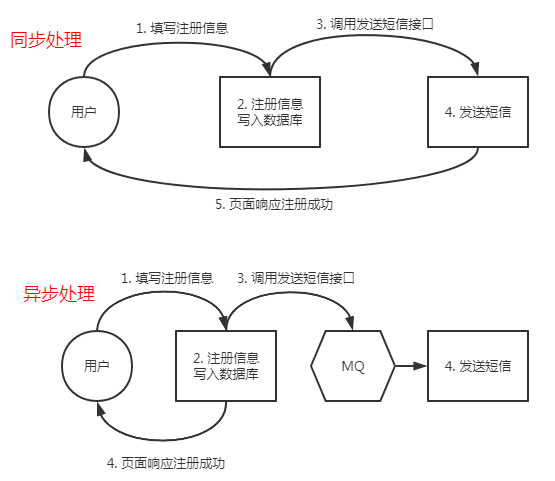
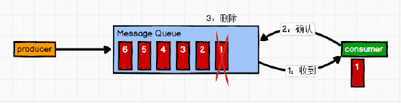
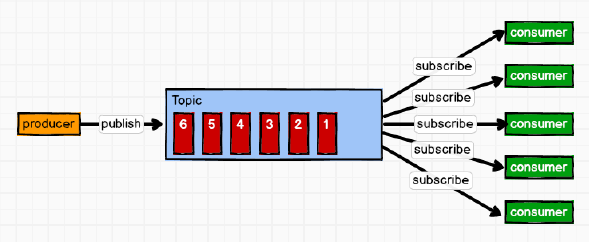
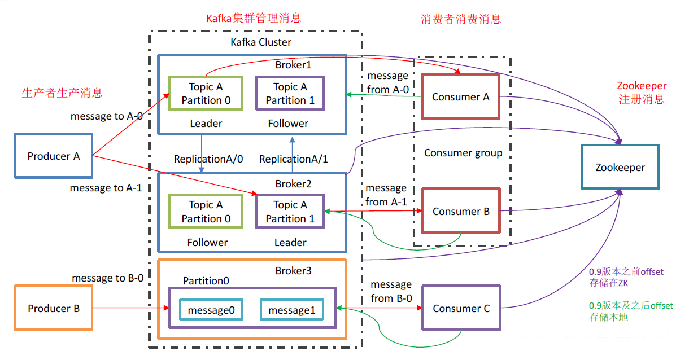
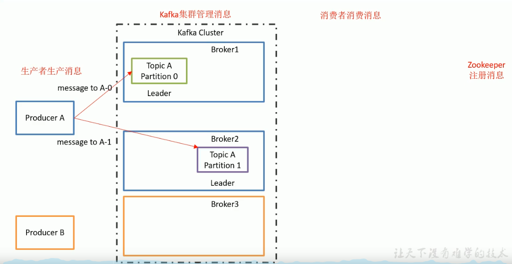
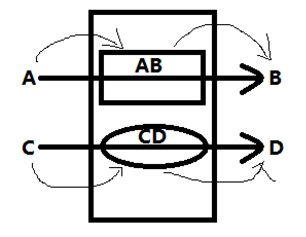
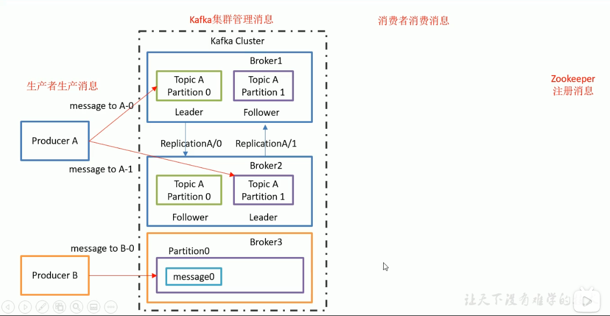
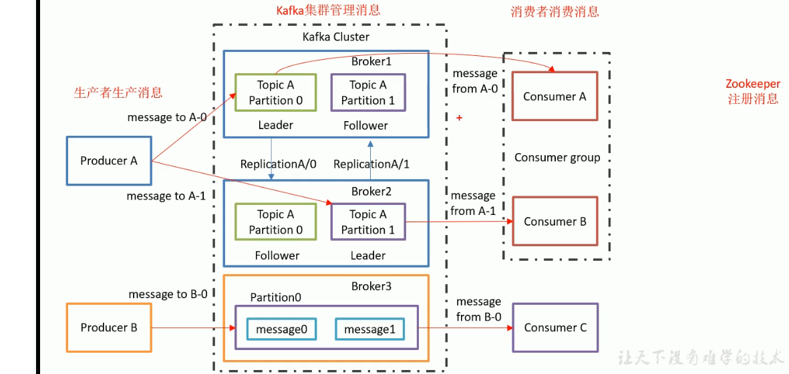
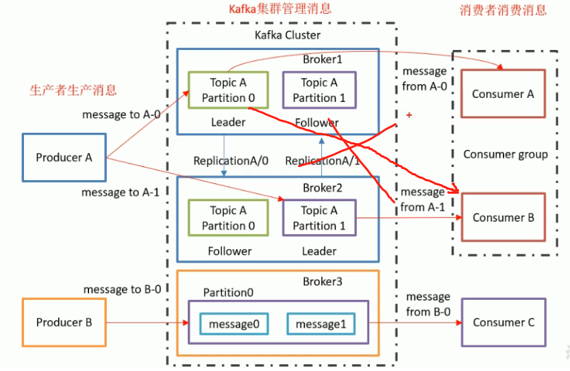

Kafka概述
1. 定义
Kafka 是一个分布式的基于发布/订阅模式的消息队列（Message Queue），主要应用于大数据实时处理领域。
p6
2. 消息队列
传统消息队列的应用场景

同步需要客户端和服务端要同时在线
好处： （主要为解耦和削峰）
1. 解耦：不需要两端同时在线，允许你独立的扩展或修改两边的处理过程，只要确保它们遵守同样的接口约束。
2. 可恢复性：系统的一部分组件失效时，不会影响到整个系统。消息队列降低了进程间的耦合度，所以即使一个处理消息的进程挂掉，加入队列中的消息仍然可以在系统恢复后被处理。
3. 缓冲：有助于控制和优化数据流经过系统的速度解决生产消息和消费消息的处理速度不一致的情况，``主要解决生产大于消费的情况``
4. 灵活性 & 峰值处理能力：``削峰``，缓解服务器压力，在访问量剧增的情况下，应用仍然需要继续发挥作用，但是这样的突发流量并不常见。如果为以能处理这类峰值访问为标准来投入资源随时待命无疑是巨大的浪 费。使用消息队列能够使关键组件顶住突发的访问压力，而不会因为突发的超负荷的请求而完全崩溃。``灵活性``主要体现在可以在峰值时添加服务器以处理突增的访问量。
5. 异步通信：很多时候，用户不想也不需要立即处理消息。消息队列提供了异步处理机制，允许用户把一个消息放入队列，但并不立即处理它。想向队列中放入多少消息就放多少，然后在需要的时候再去处理它们。3. 消息队列的两种模式
（1）点对点模式 （一对一，消费者主动拉取数据，消息收到后消息清除）
消息生产者生产消息发送到Queue中 然后消息消费者从 Queue中取出并且消费消息。消息被消费以后，queue中不再有存储，所以消息消费者不可能消费到已经被消费的消息。
Queue支持存在多个消费者，但是对一个消息而言，只会有一个消费者可以消费。

（2）发布 /订阅模式 （一对多，消费者消费数据之后不会清除）
消息消息生产者（发布）将消息发布到topic中，同时有多个消息消费者（订阅）消费该消息。和点对点方式不同，发布到 topic的消息会被所有订阅者消费。
发布/订阅模式又分为两种：
- 消费者端主动拉取的消息队列（消费者若要知道消息队列中有新的消息需要有一个长的轮询，要不断的询问消息队列中是否存在新的消息）
- 生产者推送的消息队列（由于生产者不清楚消费者的消费速度，因此假设生产者的推送速度为固定的50M/S，若消费者的消费速度为100M/S时就造成了资源浪费，而若消费者的消费速度为10M/S时消费者方就有撑爆崩溃的风险）

4. Kafka架构

1）Producer ：消息生产者，就是向kafka broker 发消息的客户端；
2）Consumer ：消息消费者，向kafka broker 取消息的客户端；
3）Consumer Group （CG）：消费者组，由多个consumer 组成。消费者组内每个消费者负责消费不同分区的数据，一个分区只能由一个组内消费者消费；消费者组之间互不影响。所有的消费者都属于某个消费者组，即消费者组是逻辑上的一个订阅者。
4）Broker ：一台kafka 服务器就是一个broker。一个集群由多个broker 组成。一个broker可以容纳多个topic。
5）Topic ：可以理解为一个队列，生产者和消费者面向的都是一个topic；
6）Partition：为了实现扩展性，一个非常大的topic 可以分布到多个broker（即服务器）上，一个topic 可以分为多个partition，每个partition 是一个有序的队列；
7）Replica：副本，为保证集群中的某个节点发生故障时，该节点上的partition 数据不丢失，且kafka仍然能够继续工作 kafka提供了副本机制，一个 topic的每个分区都有若干个副本，一个 leader和若干个 follower。
8 leader 每个分区多个副本的“主”，生产者发送数据的对象，以及消费者消费数据的对象都是 leader。
9 follower 每个分区多个副本中的“从”，实时从 leader中同步数据，保持和 leader数据的同步。 leader发生故障时，某个 follower会成为新的 follower。
生产者与集群存储
Topic 主题
消息不是直接存在Broker中，而是会有不同的Topic(主题)，将消息做一个分类


即：A要与B通信、C要与D通信，若B和D直接从Kafka中拿消息，那么拿到的就是A和C全部的消息，就乱套了
由此可以建一个AB主题和一个CD主题，A发送消息时发送到AB主题中，B又从AB主题中获取数据，CD同理
主题的作用就是将数据进行一个分类
Partition 分区
多个服务器上相同的主题建立多个分区，当消费者请求来的时候会进行轮循，增加了Kafka集群的负载能力
Leader/Follower 主/备份(备胎)

作为一个高可靠高可用的备份的消息队列，若消息只存一份若存储数据的机器挂了，那么数据将不能访问
使用Leader/Follower后，当一台服务器上的Leader挂掉以后，会将另外一台服务器上的Follower提升为Leader，再次访问时可以访问新的Leader保证了数据
无论是生产者生产还是消费者消费都是找Leader，也只能联系到Leader
生产者与集群存储总结
集群存储核心：主题
主题：
分区
每个分区有副本(副本分Leader/Follower)
无论是生产者生产还是消费者消费都是找Leader，也只能联系到Leader
生产者、集群存储与消费者
消费者组

- 一个分区partition只能被一个消费者组里边的某一个消费者消费

消费者组可以当成一个大的消费团体(是为了解决并发)
消费者组可以
提高消费能力，若有100条数据，如果消费者组中只有一个消费者需要消费100条数据，若消费者组中有两个消费者，则每个消费者只需消费50条数据而当消费者组中消费者个数大于主题分区数，由于一个分区只能被一个消费者组里边的某一个消费者消费，因此多出的消费组中的消费者就只能闲置，造成资源浪费，因此并发最好的情况为：
消费者组中的消费者数量 等于 主题的分区数
5. Zookeeper
Kafka整个集群要正常工作，需要依赖于ZK，zk会帮助集群存储信息
ZK会帮助Kafka管理整个集群
消费者也会存某些消息，如：消费者挂了，运行正常后可以接着消费而不是从头开始消费
因此消费者会将消费到的位置信息保存在ZK中
0.9版本前会将信息存储在ZK中，0.9版本之后会将信息存在Kafka本地中
改的原因：消费者本身跟Kafka集群进行通信，消费者在与Kafka维护连接的同时还要维护与ZK的连接
消费者是以拉取的模式获取连接的，拉取得速度是非常快的，而将信息存到zk中时，拉取得同时还得和zk进行沟通，跟zk打交道就太过频繁
Kafka存储数据是存在磁盘中的，因为其默认保留七天(配置文件中配置保存168小时)，内存办不到